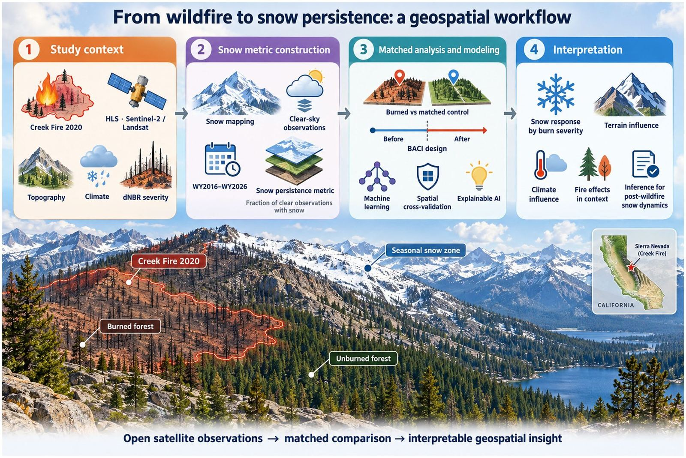
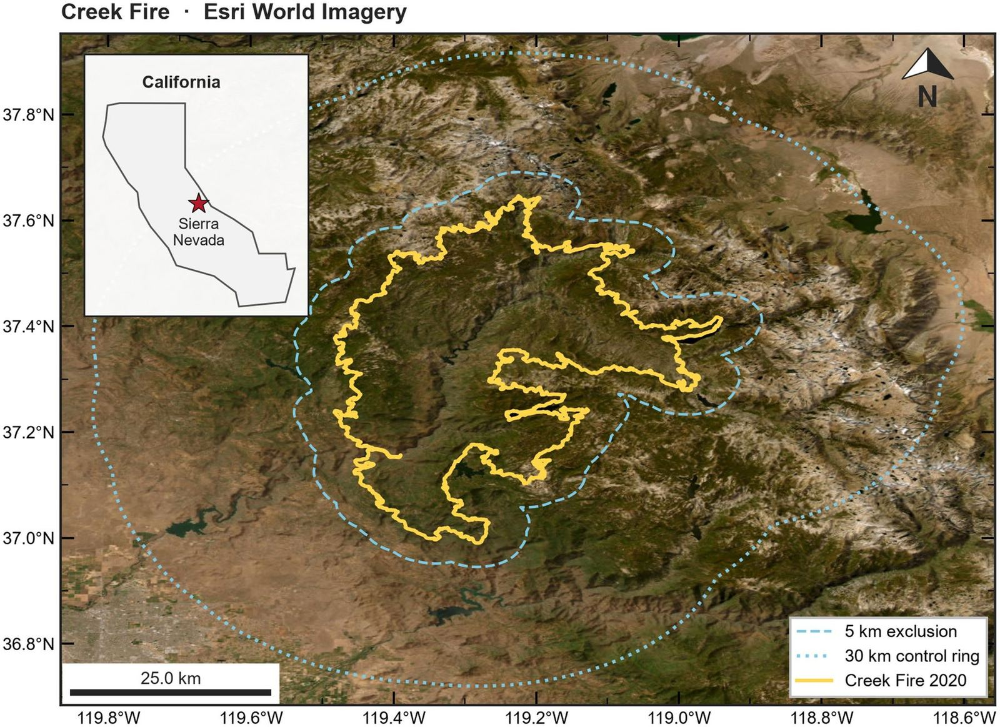
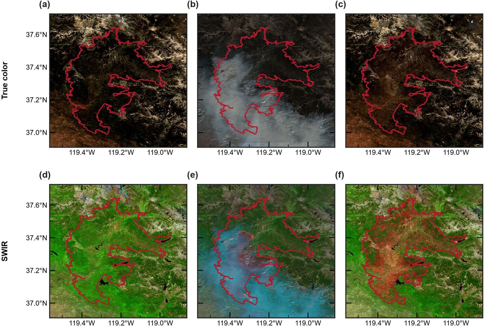
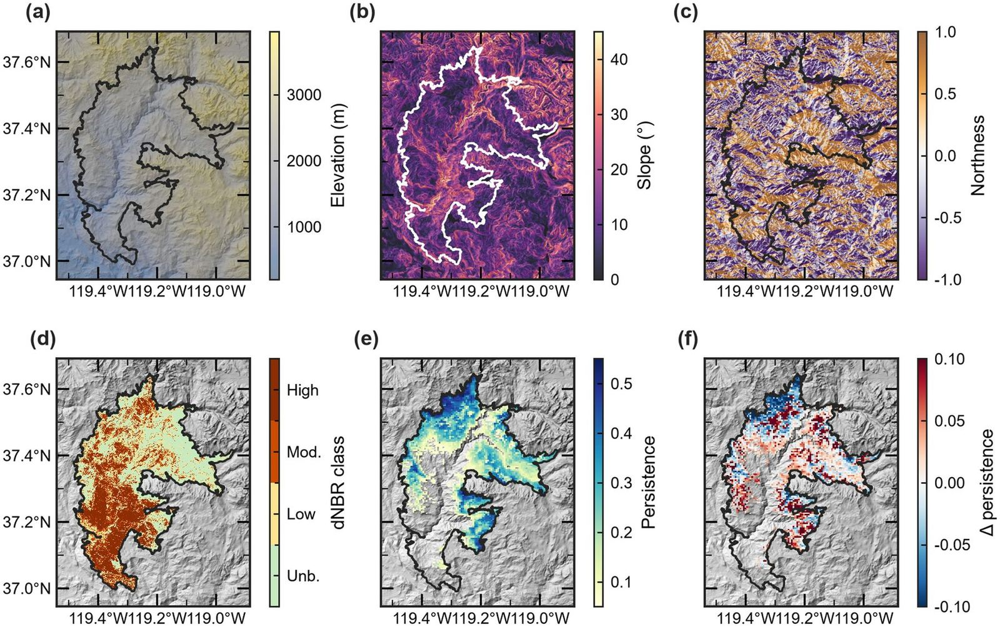
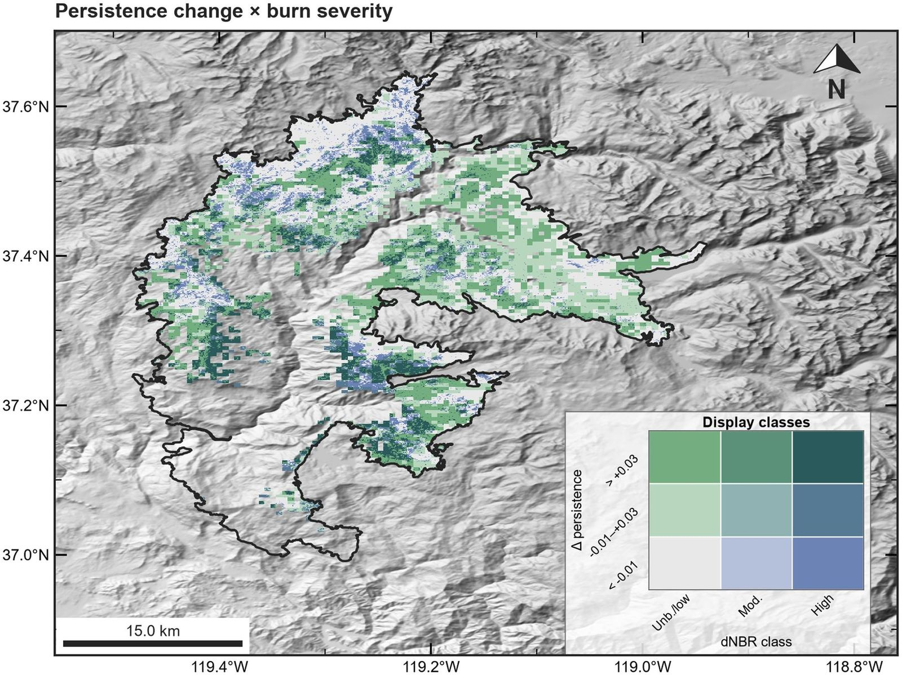
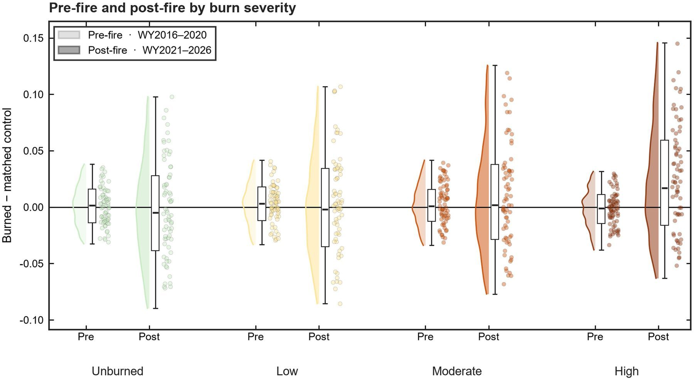
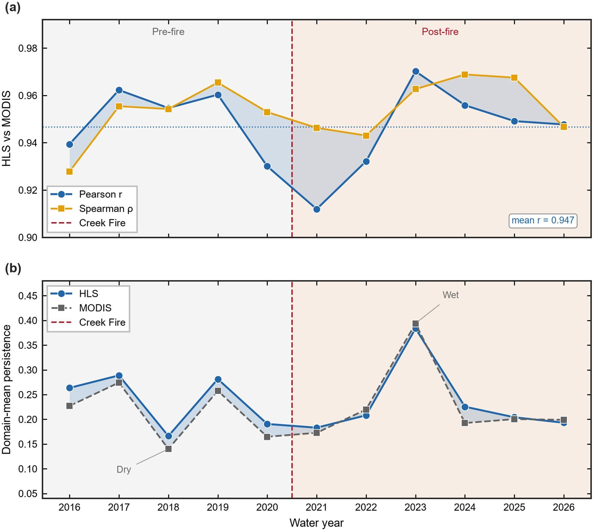
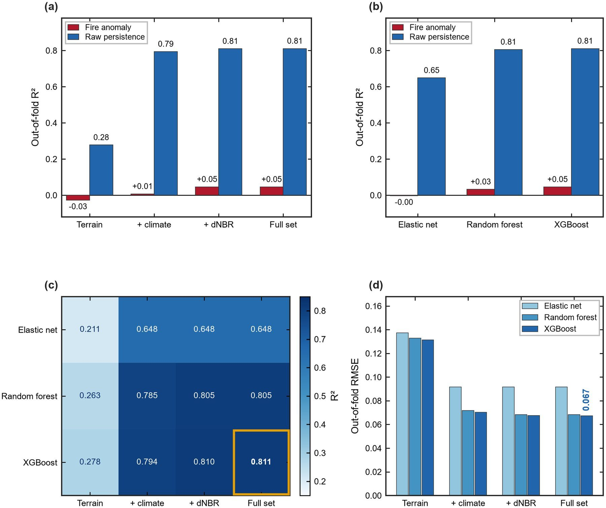
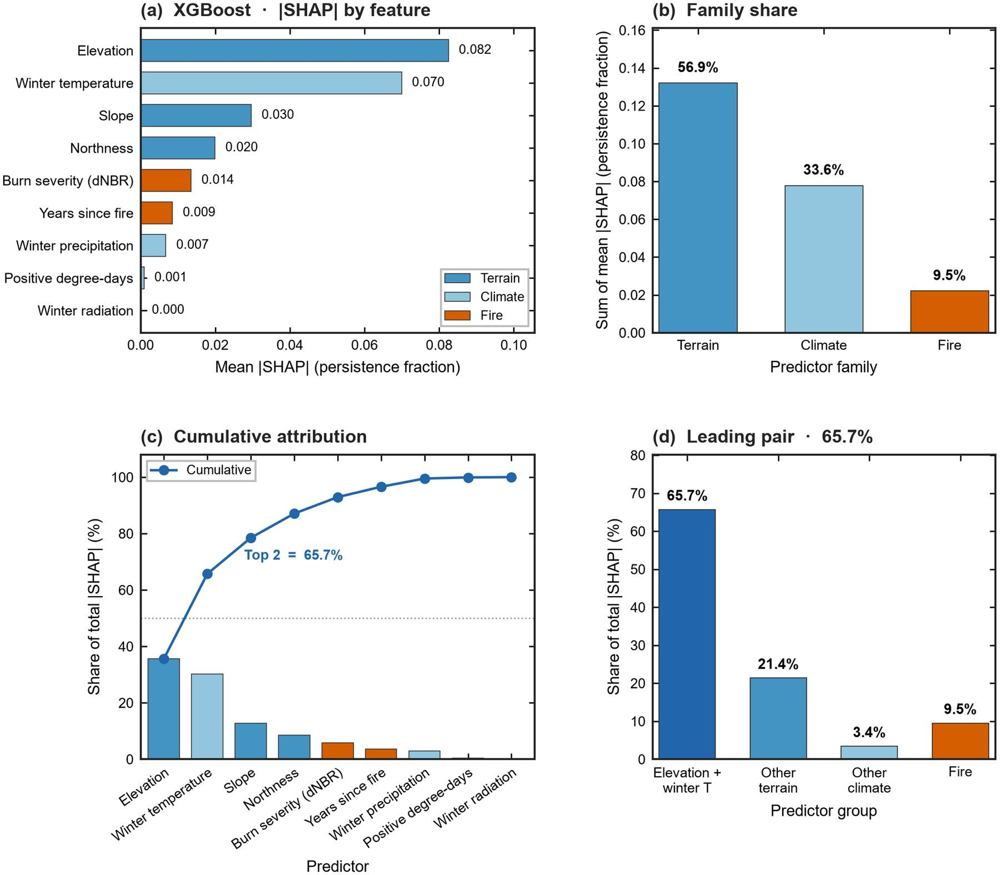

❄️ From Wildfire Severity to Snow Persistence
Parastoo Farajpoor and Mohammadreza Narimani* (corresponding author)
Frontiers in Forests and Global Change · Volume 9 · Article 2016172 · 4 November 2026 · Open access CC BY
Department of Biological and Agricultural Engineering · University of California, Davis
Prediction Is Not the Same as a Fire Effect
Accurate mapping of post-fire snow conditions does not, by itself, prove that wildfire changed those conditions. Canopy loss, albedo change, terrain, and weather can push snow accumulation and melt in opposite directions within the same burned landscape.
This original research by Parastoo Farajpoor and Mohammadreza Narimani (corresponding author) builds an explainable GeoAI framework for seasonal snow persistence after the 2020 Creek Fire in California’s Sierra Nevada. Harmonized Landsat–Sentinel-2 (HLS) observations support eleven water years (2016–2026) on a 500 m grid, with matched before–after comparisons and spatially blocked machine learning.



Terrain, Severity, and Observed Persistence
Eligible snow-zone cells inside the perimeter were matched to unburned controls on terrain and pre-fire snow; absolute standardized mean differences after matching were ≤ 0.047. HLS seasonal persistence agreed closely with MODIS (mean annual spatial correlation 0.947).



Matched Contrast vs Predictive Skill
The landscape-average before–after control–impact contrast was +0.0017 (year-level 95% CI −0.023 to +0.027). The highest burn-severity class showed a stronger response of +0.026 (2.6 percentage points). Under 5 km spatial cross-validation, XGBoost reached out-of-fold R² = 0.811 for raw post-fire persistence but only 0.046 for the fire-adjusted anomaly. Elevation and temperature together accounted for 65.7% of mean absolute model attribution.



Paper and Citation
Please read and cite the publisher version when you use this work. This research card is a visual summary only—it is not a substitute for the article, equations, or diagnostics in Frontiers.
Farajpoor, P., & Narimani, M. (2026). From wildfire severity to snow persistence: a multisource GeoAI study of the 2020 Creek Fire. Frontiers in Forests and Global Change, 9, 2016172.
DOI: 10.3389/ffgc.2026.2016172 · Open access under CC BY 4.0
Contact
Mohammadreza Narimani
PhD Candidate, University of California, Davis